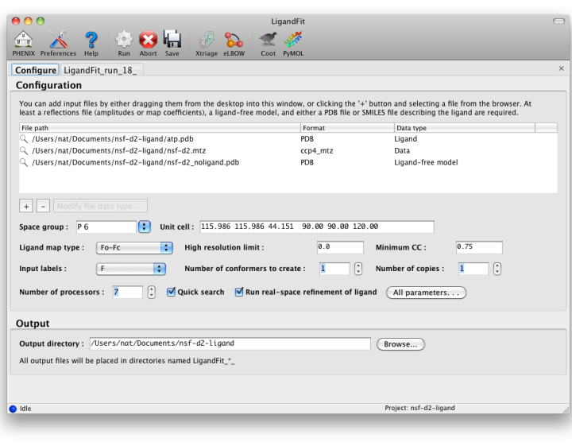
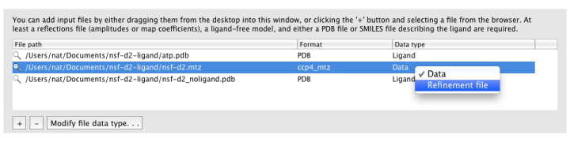
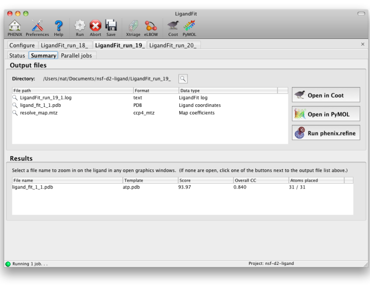

LigandFit is one of the four PHENIX "wizards" for automated structure determination. It performs flexible ligand fitting into difference maps using RESOLVE, followed by optional real-space refinement. As elsewhere, this documentation covers the use of the GUI specifically, and is not a general-purpose reference for program function. See the command-line documentation for a complete list of parameters and details on usage. If you want to see an example of how LigandFit works, we recommend reading the tutorial first.
Note that waters will be omitted when placing the ligand. However, if you are using pre-calculated map coefficients, you may need to remove waters beforehand to avoid "flattening" the difference density around the ligand. Protein atoms overlapping with the ligand density will prevent a successful placement, so some editing of the input structure is generally recommended.
The first tab in the LigandFit window contains a field for adding input files, which can be dragged and dropped from the desktop, or picked from a file browser by clicking the "+" button.

To run, you will need the following input files:
- A PDB file containing the initial ligand-free model. (It is okay for this to contain previously-placed ligands as long as the intended binding site is empty.) Water molecules will be automatically removed if necessary.
- An MTZ file containing either experimental amplitudes (F,SIGF) or pre-calculated difference map coefficients.
- A file describing your ligand. This should be either a PDB file containing a single residue, or a text file containing a SMILES string. In the latter case, eLBOW will be used to generate the starting geometry.
Additional optional files:
- A PDB file containing ligand coordinates for comparison at the end of the program.
- A PDB file containing previously fit ligands (in addition to the starting model), which will be used to exclude occupied regions from fitting.
- CIF files defining ligand restraints for refinement.
- A reflections file containg F/I, SIGF/SIGI, and FreeR_flag for running a full round of phenix.refine after fitting.
Ligandfit will try to guess what each input file should be used for automatically. If it does not choose the desired data type, you can change this by right-clicking the "Data type" column for that file, or selecting the file and clicking the "Modify file data type" button below the list.

MTZ column labels (and map type, if applicable) will be extracted automatically when a file is loaded.
By default, LigandFit runs multiple slightly different jobs in parallel and picks the best result from these; however, check the "Quick search" box if you want it to run a fast single job instead.
Other options:
- Ligand map type tells LigandFit what type of map to calculate or expect in the input file. If you are supplying map coefficients from phenix.refine or another program, "Pre-calculated" is appropriate. If you are using raw data, "Fo-Fc" is the standard, but you may use "Fobs" instead.
- Minimum CC sets the correlation to density required to consider a placement successful.
- Real-space refinement will optimize the fit to density after placing the ligand. This is optional (and may be unnecessary if you intend to run phenix.refine immediately afterward), but is usually very fast and improves the fit.
- Number of conformers to create determines how the ligand is partitioned for placement of fragments. When this is set to 1, RESOLVE will try to identify rigid groups automatically. Larger numbers will instead use eLBOW to generate multiple conformations which are used to identify the rigid groups. This is somewhat slower, but often more accurate.
Unless quick mode is enabled, LigandFit typically works by starting multiple similar jobs with slightly different parameters, to sample as many candidate ligand conformations and density fits as possible. Although this increases runtime substantially, it parallelizes well across multiple CPUs if they are available, and a queuing system may be utilized to split up tasks.
Depending on how you have configured your computer and your Phenix installation, as well as the operating system used, you may have several options for starting LigandFit:
- Run locally; this is the default mode (and on Windows, the only mode), and offers the best integration with the GUI, but has the limitation that the GUI may not be closed while the program is running.
- Run "detached": this starts a completely separate process, which will allow you to close the GUI and resume later. (Not available on Windows.)
- Run on a queuing system: this is usually only available on Linux, and requires that queuing support be enabled in the GUI preferences. Currently Sun Grid Engine is the prefered system, although PBS can be made to work with some customization. If you use this option, be sure to set the number of processors to 1, or the job may interfere with other processes on the queuing system.
Additionally, if queuing system support is enabled, the GUI will also present an option to distribute the individual jobs across the queue. If this option is selected, either local or detached mode should be used, and the primary job will be run locally, with child processes submitted to the queue.
LigandFit will generate a difference map used for fitting, and a separate PDB file for each copy placed. All of these can be opened at once in one of the graphics programs by clicking the buttons next to the file list. The button labeled "Run phenix.refine" will launch that GUI with the start model, reflections (if amplitudes were supplied), and all ligand output files already loaded.

As a general rule, a correlation coefficient (CC) above 0.7 is considered a good fit; CCs below this value usually indicate that the ligand is not placed correctly (although in rare cases the fit may be partially correct). In any case, you should always visually inspect the ligand placement in Coot, both before and after refinement. If LigandFit was unable to place the ligand correctly, there are several recommendations for troubleshooting:
If you do not obtain a good fit of your ligand to the map, there are a few things you should check:
- Does your starting model have other molecules where the ligand needs to be placed? If so, then you will need to remove these before LigandFit can fit the ligand there. The LigandFit Wizard excludes all locations that are occupied by atoms in the starting model. Note that waters are the exception to this rule, and will be ignored as necessary - however, if you are fitting to an Fo-Fc difference map, the presence of waters may obscure ligand density.
- Have a careful look at all the output files. Work your way through the main log file (e.g., LigandFit_run_1_1.log). Is there anything strange or unusual in any of them that may give you a clue as to what to try next?
- Have a look at the difference electron density map. Does it have clear density for the ligand? If not, you may want to try other types of maps. You can run phenix.maps to obtain a sigmaA-weighted mFo-DFc map that should optimally show the placement of your ligand.
- If you have atomic-resolution data, try setting the high-resolution limit slightly lower; data beyond approximately 1.8A rarely improve the fit, and may actually make it more difficult.